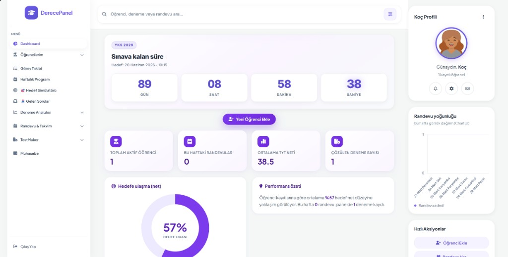

YKS & LGS hazırlık
YKS 2026'da Dereceye Giden
En Akıllı Yol
Koçluk, planlama ve analiz tek panelde. Hedefini netleştir, çalışmanı ölç, netlerini yükselt — DerecePanel ile her adımda bir üst lige çık.

Koç paneli önizlemesi — veriler yalnızca bulanıklaştırılmıştır.
Sistemimiz
Veriye dayalı, koç destekli hazırlık
DerecePanel, YKS ve LGS sürecinde öğrenci ile koç ve gerektiğinde kurucu ekibini tek çatı altında toplar. Günlük çalışma ritmi, deneme sonuçları ve hedef takibi aynı panelde birleşir; veli ve kurum içi iletişim için gereken izlenebilirlik hazırdır.
Kurumunuz büyüdükçe öğrenci kotası ve koç sayısı paketlerle ölçeklenir; küçük dershanelerden çok şubeli yapılara kadar aynı mimari üzerinden ilerlersiniz.
Nasıl çalışır?
- Koç paneli: öğrenci listesi, haftalık program, görev ve randevu takibi, deneme / optik analizi, muhasebe özetleri ve TestMaker ile içerik üretimi.
- Öğrenci paneli: atanmış plan, Pomodoro, kaynak ve deneme görünümü; koçun belirlediği hedefe göre şeffaf ilerleme.
- Kurucu görünümü: koç ve öğrenci hesap yönetimi, operasyonel özetler ve (isteğe bağlı) kurumsal paketlerle çoklu şube düzeni.
- Veri akışı: deneme netleri ve branş kırılımları zaman içinde birikir; eksik konular ve trendler hem koç hem öğrenci tarafında anlamlı hale gelir.
Özellikler
Sistemin İçinde Neler Var?
Çalışma disiplininden analitiğe kadar ihtiyaç duyduğunuz modüller, modern arayüzle bir arada.
İnteraktif Ders Programı
Haftalık planını sürükle-bırak mantığıyla düzenle; hedeflerine göre otomatik dengele.
Pomodoro Odak Merkezi
Zaman blokları ve mola hatırlatıcılarıyla verimli çalışma ritmi oluştur.
Hedef Simülatörü
Hedef üniversite ve net bandını gör; eksik konuları önceliklendir.
7/24 Soru Havuzu
Branş bazlı içeriklerle pratik yap; koçun atanadığı setleri anında çöz.
Paketler
Size Uygun Paketi Seçin
Yıllık lisans modeli; kurum büyüklüğüne göre öğrenci kotası ve modüller ölçeklenir. Fiyatlar KDV hariç gösterilir.
Standart
Tek şube · küçük kurumlar
₺10.000 / yıl
3 koça kadar · 120 öğrenciye kadar kotası
- Koç paneli + öğrenci paneli (temel)
- İnteraktif ders programı ve Pomodoro
- Deneme analizi (standart raporlar)
- Soru havuzu (çekirdek içerik)
- E-posta desteği (2 iş günü içinde yanıt)
Premium
Çoklu koç · orta ölçek
₺28.900 / yıl
8 koça kadar · 450 öğrenciye kadar kotası
- Standart paketteki tüm modüller
- Hedef simülatörü ve gelişmiş net analizi
- TestMaker (PDF / kırpma / şablonlar)
- Optik ve deneme analizi entegrasyonu
- Öncelikli destek (aynı iş günü)
- Yılda 2 kez uzaktan eğitim oturumu
VIP Derece
Zincir & kurumsal
₺59.900+ / yıl
Sınırsız koç · 2.000+ öğrenci kotası (özel anlaşma) ve SLA
- Premium’daki tüm özellikler
- Çoklu şube ve kurum içi roller
- Özel entegrasyon (CSV, API, web kancası — kapsama göre)
- Adanmış hesap yöneticisi
- 7/24 öncelikli destek ve SLA garantisi
- Özel eğitim ve kurulum asistanlığı